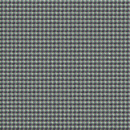
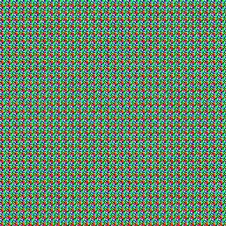
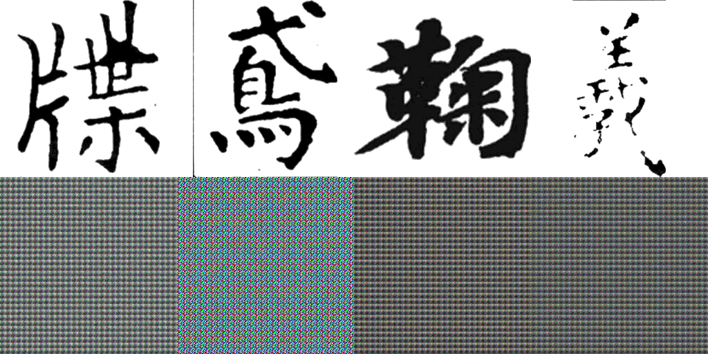
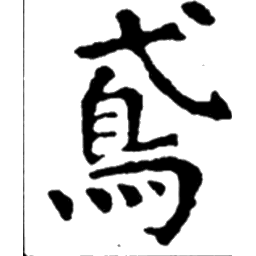

pred 0

pred 1

pred 2

pred 3

pred 4

pred 5

pred 6

pred 7
| Model | DiT-2Cond-S/8 (pixel, 42M params) |
| Step | 55000 |
| Diff Loss | ~0.012 |
| MSE (20 samples) | 0.3206 |
| SSIM (20 samples) | 0.0036 |
| Sampling | DDIM 50 steps, cfg=4.0 |






SSIM 极低但 MSE 也不高，最可能的原因:
关键判断: 看 pred 图 —— 如果全是灰雾/噪声, 说明模型还没学会生成, 需要继续跑; 如果有字形轮廓但模糊, 说明方向对但需要更多步数。